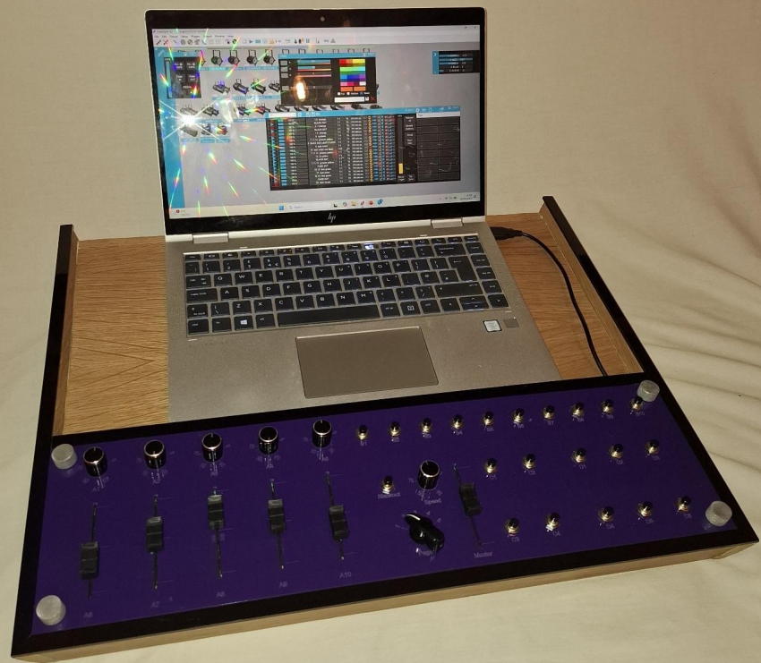
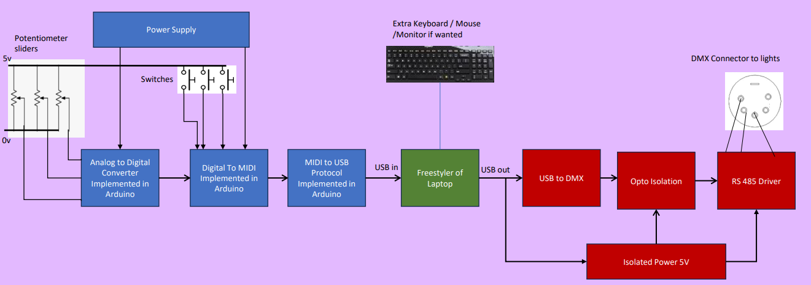
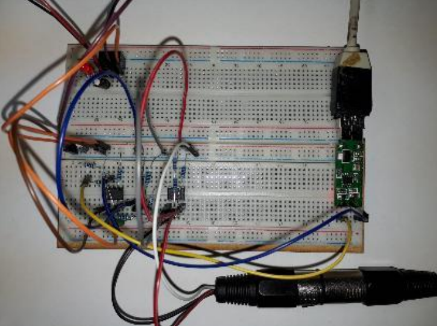
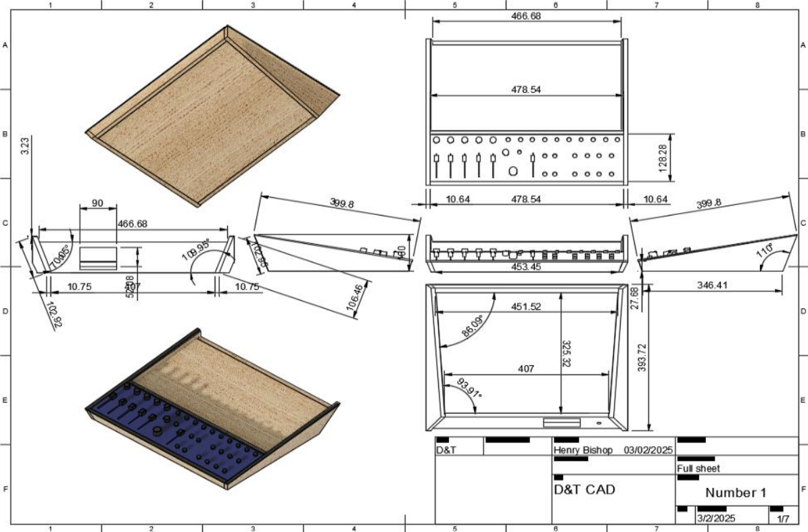
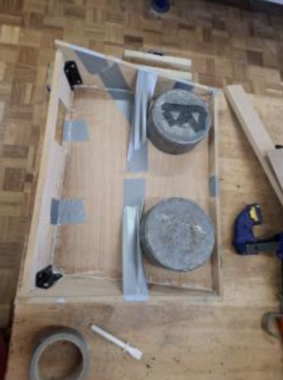
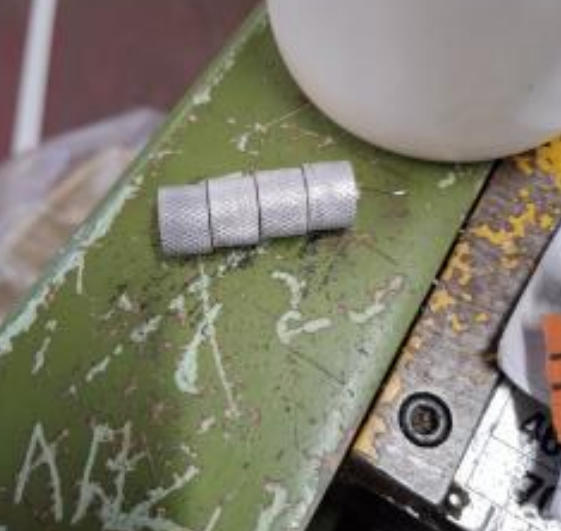
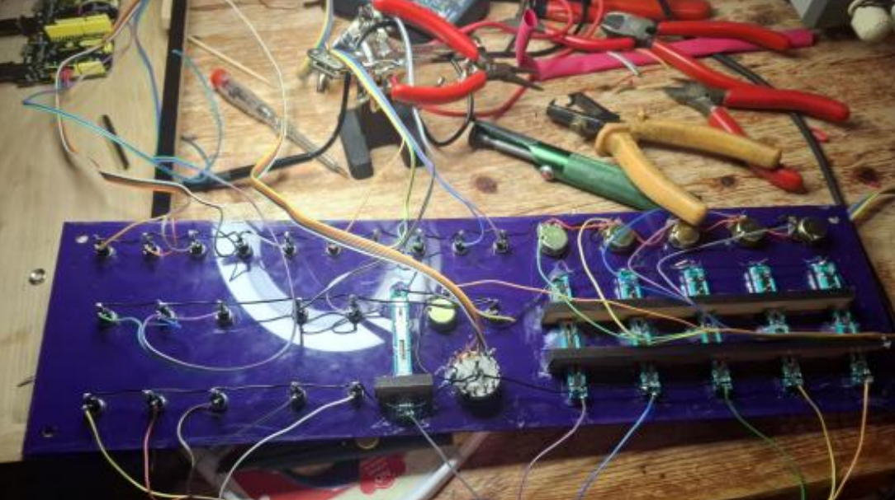
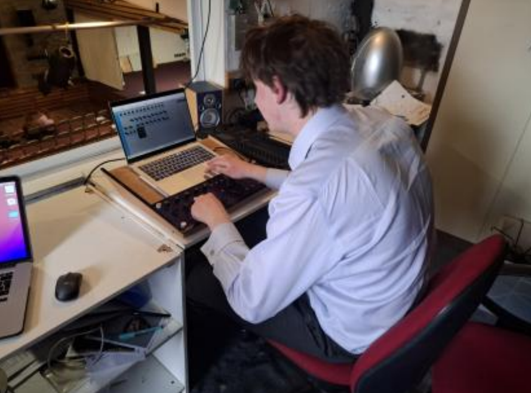

For my advanced A-Level Design and Technology coursework, I undertook a comprehensive 40+ hour engineering project to solve a complex problem within the live events industry. Working directly with a real-world client, I designed, programmed, and manufactured a bespoke, integrated 'Hybrid' Lighting Desk that bridges the gap between affordable software and professional physical hardware. My full writeup can be seen here.

I began by consulting my client, Mr. Waring, a Digital Media Teacher responsible for managing the technical aspects of school productions at Wycliffe College. I also interviewed Ed, a Sixth Form student who regularly volunteers as a lighting technician. Through these user-centered design interviews, a massive gap in the lighting equipment market became obvious.
Modern stage lights are incredibly complex. A single LED moving light can require up to 15 different control channels (for red, green, blue, pan, tilt, strobe, etc.). At the school, the technical team was struggling because their older analog lighting desks simply did not have enough sliders to control these new lights. Conversely, their newer digital desk (the Jandus Stage CL) could only control a maximum of 24 lights and was incredibly confusing for student volunteers to learn.
Professional lighting desks that can handle this complexity cost tens of thousands of pounds. There is free, highly capable software available (such as Freestyler) that runs on a laptop and uses an easy visual interface. However, trying to run a fast-paced live show by clicking a computer mouse is slow, frustrating, and lacks the sensitivity of physical sliders. The problem was clear: How could I combine the visual ease and massive capacity of laptop software with the tactile, real-time control of a physical lighting desk?.
My proposed solution was to build a physical hardware interface that talks directly to the laptop software. The user would dock their laptop into a custom-built desk. During rehearsals, they could use the laptop screen to easily map out complex lighting scenes. During the live performance, they would use my custom-built physical faders and buttons, which would send digital signals to the laptop, executing the lighting cues instantly.
To achieve this, I had to master two entirely different communication protocols:

To handle the physical inputs, I selected two Arduino Leonardo microcontrollers. These specific boards are excellent because they can be programmed to be recognised by a computer as native USB interface devices. I designed an array consisting of 20 digital push buttons, 5 rotary potentiometers, and 5 linear potentiometers (sliders).
I wrote a custom C++ script for the Arduinos that constantly scans the physical position of every single slider and button. If a user moves a slider, the Arduino instantly maps that analog voltage to a digital value between 0 and 127, formats it as a MIDI packet, and fires it over the USB cable into the Freestyler software. Before building the final desk, I prototyped this entirely on a breadboard to prove the code functioned flawlessly.
Translating the computer's USB output into the DMX 512 standard was one of the most challenging aspects of the project. I initially purchased a pre-made USB-to-RS485 conversion chip online, but upon testing it with a logic analyser, it completely failed to communicate with the lights. After deep research on engineering forums, I discovered I had been sold a counterfeit chip from China that lacked the processing speed for DMX.
Instead of giving up, I engineered my own converter from scratch. Using schematics sourced from USBDMX.com, I breadboarded an entirely new circuit utilising an FTDI chip, a genuine MAX485 driver, and a 6N137 Opto-Isolator. The opto-isolation was a critical safety feature I added to ensure that if a massive power surge occurred in the stage lighting grid, it could not travel backward through the USB cable and destroy the user's laptop. I soldered this finalised circuit onto a permanent Vero board.

With the electronics functioning, I focused on the physical chassis. My research into anthropometrics (the study of human body measurements) dictated the dimensions: to ensure the user could reach all controls comfortably without straining, the desk needed a maximum depth of 40cm and an incline angle of between 10 to 15 degrees.
For the aesthetic form, I drew inspiration from the 'Streamline Moderne' movement of the 1940s and 1950s, as well as angular modern designs like the Tesla Cybertruck. I developed a sleek, wedge-shaped chassis with sides that taper inward at a 20-degree angle, giving it an aerodynamic, futuristic look.
Using User-Centered Design principles, I realised that just placing a laptop next to the controller was messy. I redesigned the top of the chassis to include a recessed tray perfectly sized for a standard 15-inch laptop. I engineered an 'anti-slip bar' just below the laptop tray, which serves a dual purpose: it prevents the laptop from sliding down the 15-degree incline, and it features hidden routed channels to perfectly manage the USB cables.

Building the chassis required combining traditional woodworking with modern digital fabrication techniques (Laser Cutting and 3D Printing). To ensure the product was environmentally conscious, I selected 10mm Oak-veneered MDF. MDF is highly sustainable as it is manufactured from recycled sawdust and wood shavings, while the thin oak veneer provides a premium, high-end visual finish.
I began by cutting the primary panels using a panel saw and table saw. The most difficult stage was cutting the complex compound angles for the streamlined sides. I used a bandsaw with an angled miter gauge to cut the 20-degree inward slopes and the 30-degree front/back slopes.
To assemble the shell without ugly visible screws, I utilised hidden dowel joints and PVA wood glue, clamping the entire structure under heavy weights overnight to cure. Once dried, I used a chisel, a router plane, and an oscillating saw to carefully cut out the rear housing slot for the modular DMX box, and applied iron-on oak veneer strips to hide any exposed raw MDF edges. The entire wooden chassis was sanded to a smooth finish and treated with Osmo PolyX oil, which protects it from the dust and liquid spills common in theatre lighting boxes.

The control panel needed to be made of an electrical insulator to safely house the circuitry. I used CAD software to design the panel layout and laser-cut it from a striking Purple Acrylic (chosen to match Wycliffe College's school colors). To protect the edges of the desk from impacts, I also laser-cut and line-bent black acrylic corner brackets and edge strips, attaching them with contact adhesive.
For maintainability, the USB-DMX circuit is housed in its own modular, removable box made of laser-cut black acrylic utilising precise finger joints. This allows the output module to be swapped out or upgraded in the future without rebuilding the whole desk.
I wanted the hardware holding the acrylic panels to feel bespoke and premium, rather than using off-the-shelf screws. I took raw aluminum rod stock and mounted it in a metal center lathe. I turned the diameter down to exactly 15mm, applied a textured grip using a knurling tool on an automatic feed, drilled the center, and tapped it with an M4 screw thread. Finally, I used a parting tool to slice off four perfect custom aluminum thumbscrews.
For the fader caps, I modeled custom ergonomic shapes in CAD and 3D printed them using Eco-ABS (a recycled thermoplastic), hot-gluing them to the linear potentiometers.

The final assembly was a massive undertaking in wire management. I mounted the 20 push buttons and 10 potentiometers into the purple acrylic plate. Using a soldering iron, I carefully stripped, tinned, and soldered common ground wires across all 30 components. I then routed dozens of data ribbons, connecting every single switch and fader to the correct digital and analog pins on the two Arduino Leonardos hidden inside the chassis. Once the wiring was secured with heat shrink tubing, I secured the panel down using my custom machined aluminum knobs.

The completed hybrid desk weighs just 3.2 kg, making it exceptionally portable. Despite using high-quality materials, the total parts cost came to roughly £78 - far below the £850 retail cost of comparable mid-tier digital desks, and even cheaper than hiring a desk for a single night.
The ultimate test of the prototype took place at the school's live Spring Concert. I brought the desk into the lighting box, docked the laptop, and connected the custom DMX-output box to the school's lighting truss. The hybrid system performed flawlessly. I was able to use the software to assign complex cues to my physical buttons, allowing me to transition between scenes with the tactile speed and accuracy required for a live musical performance.
My client, Mr. Waring, was thrilled with the result, noting that the clean aesthetic, the integrated laptop tray, and the modular DMX box perfectly solved the school's technical bottlenecks. By open-sourcing this design in the future, other schools and community theaters could build their own versions, completely bypassing the massive costs and built-in obsolescence of the commercial stage lighting industry.
